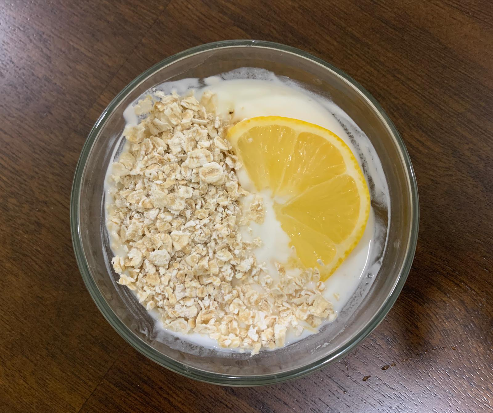
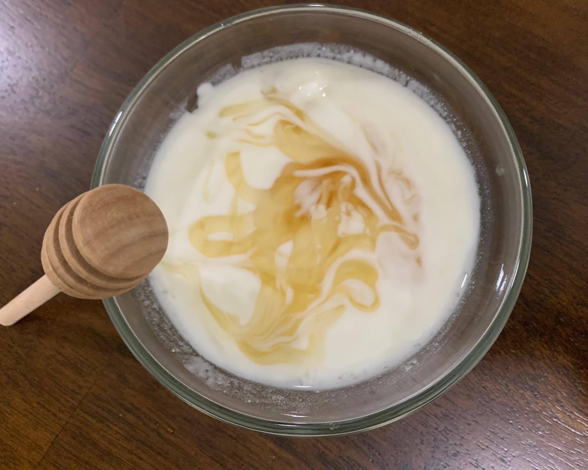
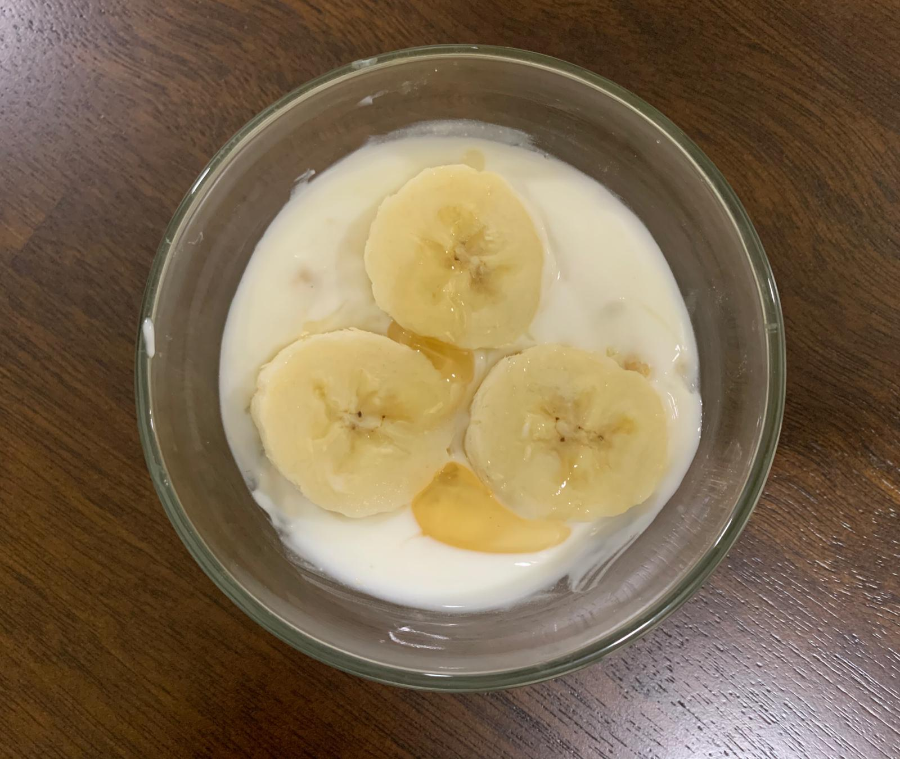

FACE MASKS

Oats Mask
Ingredients:
- 2 tbsp honey
- 2 tbsp oats
- 1/2 tbsp rosewater
- Blend all ingredients and apply for 15 min,
wash off with warm water
- This mask moisturizes the skin

Yougurt Mask
Ingredients:
- 1/2 cup of yogurt
- 1 tbsp honey
- 1/2 tbsp lemon juice
- Blend all ingredients and apply for 15 min, wash off with warm water
- This mask brightens the skin

Banana Mask
Ingredients:
- 1 banana
- 1 tbsp honey
- 3 tbsp rice flour
- Blend all ingredients and apply until dry and wash off with warm water
- This mask helps with wrinkles on the skin